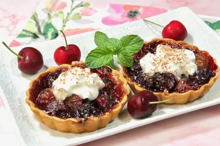

Homemade Cherry Tarts

- Prep Time: 20 mins
- Cook Time: 30 mins
- Chill Time: 45 mins
- Total Time: 1 hr 35 mins
- Servings: 6
- Yield: 6 tarts
Ingredients
- 1 (14.1 ounce) package refrigerated pie crusts
- 1 pound fresh sweet cherries, pitted
- 2 tablespoons minute tapioca
- 1/3 cup sugar
- 1/2 teaspoon almond extract
- 1 pinch salt
- 1/2 cup whipped cream, or as needed (optional)
- grated chocolate as needed for garnish (optional)
Directions
- Place pie crusts on a lightly floured surface and roll out each crust with a rolling pin, so it is
large enough to cut three 5 to 5-1/2-inch circles, for a total of 6 tart crusts.
- Fit each dough circle into a 4-inch removable-bottom tart pan. Press the dough against the sides of
the pans, and prick the bottom with a fork to prevent bubbling. Remove any excess dough by running the
rolling pin across the top of each pan.
- Refrigerate tart crusts until well chilled, about 45 minutes, keeping them refrigerated until ready to use.
- Preheat the oven to 400 degrees F (200 degrees C).
- In a large bowl, combine cherries, tapioca, sugar, almond extract, and salt. Remove the pans from the fridge
and distribute cherry mixture evenly among the tart pans. Place the pans on a baking sheet.
- Bake in the preheated oven until cherries are soft and crust is golden brown, 25 to 30 minutes.
Go back home